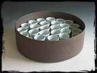
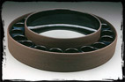
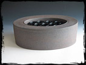
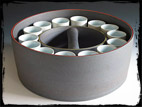
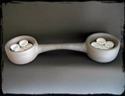

Drum Container, 29 cups

Hat Carrier, 20 cups
There is nothing more natural or familiar than a curve. Our world is curved from the vast expanse of the earth's surface to the smile on a newborn's face. So, it is here, with the curve, that Peter Beasecker begins his exploration of functional pottery in his latest exhibition, Containers (14 August - 12 September, 2004), at the Ferrin Gallery.
On first examination, these works, nine in all, are clearly of a family - each piece consists of a dark, large, stoneware tray or holder containing a number of light porcelain cups (from eight to thirty one). The containers are a bit rough with scraped surfaces so that the grog of the clay body shows. The cups are smooth and pleasant in the hand. Beasecker doesn't push the viewer with overt contrasts of hard edges against soft or in-your-face surface decoration against plain background; the artist is up to something more. Slowly, as one moves from one work to the next, Beasecker's manipulation becomes clearer.
There are circles within circles in these holders and cup, yes; however, in some, one finds a circle containing an oval and vice-versa. A small difference, but delightful when realized. The subtle attentions (and intentions) extend throughout the works, such as with the pinstripes of red and yellow on "Oval Carrier, 14 cups" (2004) for example. Further, one can't help but delight in the tiny light blue glazed tumblers in "Drum Container, 29 cups" (2004) for within the trimmed foot of each are three tiny pin-dots of red glaze. Details like these speak to the attention of the maker, and eventually the user.
Beasecker addresses much more than a functional pottery tradition in these works. Six of the nine carriers have great full handles that span two sides, or in one fine example, two halves, of double walled carriers. The handles are reminiscent of truss bridges - straight top and arched bottoms. With this observation, one discovers that there's architecture going on here, too.
"Wedding Carrier, 8 cups" (2004) is a phenomenal piece of pottery and architecture in miniature. This piece seems too big and unusual for day-to-day use; it is by these characteristics that one realizes that this object is special. As in other examples, the artist contrasts an iron and manganese rich raw surfaced carrier with beautifully simple glazed porcelain tumblers. Here the handle bridging the two halves has been emphasized to the extreme. The viewer can't help but try to place "Wedding Carrier" in a context and imagine each set of four cups being used to help complete the ceremony.
Each piece in Containers has its own character and secrets to share. Unlike much contemporary pottery, this work is easily grasped in hand for exploration. Through exploration, one finds that this work is a study of subtleties, ones well worth observation and use.
Links
Ferrin Gallery
69 Church Street
Lenox, Massachusetts 01240
Telephone: 413-637-4414
http://www.ferringallery.com
Forrest Snyder
940 Water Street, #5
North Bennington, Vermont 05257
http://www.forrestsnyder.com

Oval Container, 13 cups

Oval Carrier, 14 cups

Wedding Carrier, 8 cups